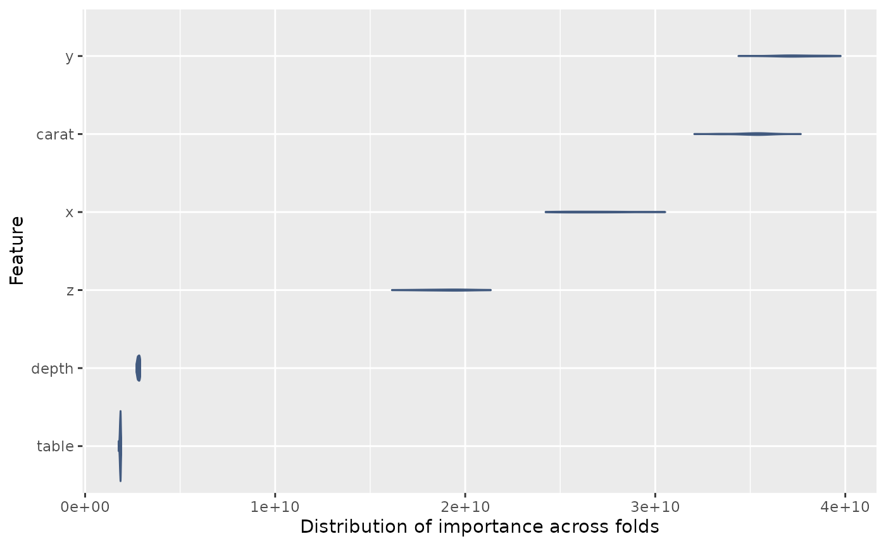

Storing fitted models
In either the default dml_XX() functions, or when
running a custom run_dml(), you have the option to store
all fitted models (across both folds and reps) by setting
store_models = TRUE. This allows you to extract feature
importance measures from the underlying models.
Warning: this can use a lot of memory, especially if you are using a large number of folds and reps.
store_models = TRUE
library(tiDML)
df <- diamonds_sample(n=500, seed=42)
fit_rf <- dml_rf(
data = df,
y = "price",
d = "is_rated_ideal",
x = c("carat", "depth", "table", "x", "y", "z"),
n_folds = 5,
n_rep = 3,
store_models = TRUE
)Extracting feature importance
Feature importance can be only be extracted for tree based models (decision trees, random forests, or gradient boosted trees). For Lasso regression, the coefficients themselves can be used to assess variable importance.
print("not yet implemented")
#> [1] "not yet implemented"The function get_feature_importance() extracts feature
importance measures from all the fitted models and returns a tidy data
frame.
feature_importance <- get_feature_importance(fit_rf, model = "outcome")
print(feature_importance)
#> # A tibble: 90 × 4
#> rep fold variable importance
#> <chr> <chr> <chr> <dbl>
#> 1 Repeat1 Fold1 carat 1476530170.
#> 2 Repeat1 Fold1 depth 129023204.
#> 3 Repeat1 Fold1 table 97344033.
#> 4 Repeat1 Fold1 x 1438006224.
#> 5 Repeat1 Fold1 y 1385954655.
#> 6 Repeat1 Fold1 z 1291377574.
#> 7 Repeat1 Fold2 carat 1333627279.
#> 8 Repeat1 Fold2 depth 130770570.
#> 9 Repeat1 Fold2 table 110364172.
#> 10 Repeat1 Fold2 x 1374728139.
#> # ℹ 80 more rowsYou can average importance across folds and reps, or plot the feature importance as a distribution.
library(ggplot2)
feature_importance |>
ggplot(aes(importance, reorder(variable, importance))) +
geom_violin(fill="#425a7f", colour="#425a7f") +
labs(x="Distribution of importance across folds", y="Feature")